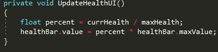

In this project we are going to walk through making a Top-Down Shooter game. To the left you can see where there are going to be major changes added to the game. After each of those sections you will be able to complete a quiz. Additionaly, there will be challenges in each secition for you to complete without our guidence. There will also be a link for the game on GitHub completed up to the end of each section avalible for download, feel free to play around with the code and see what does what.
I would also like to note that this will not be an accurate representation of the development life cycle. Unless you have planned everything out to the letter and nothing goes wrong...something will always go wrong.
Now that you have all the sprites select them all and change their pixels per unit to 32 also change the filter Mode to Point(NoFilter) and Compression to None then click Apply. This means that each unit will be 32 pixels high and 32 pixels wide. Next we will add all the layers, sorting layers and tags that we need. Go to Edit -> Project Settings -> Tags and Layers. We will also setup the collision matrix, Edit -> Project Settings -> Physics2D and scroll to the bottom set it up like the following.
Here we'll create all the Scripts that we will be needing aswell. You should create a new folder in the assets folder called Scripts. Creating a new Folder
Okay, thats all we will be doing for project setup
here we are going to setup the movement for the player. This means we will be getting input from our user and telling the Player object what to do. We are going to need to add a number of new component to the gameObject. Below is a list of what components are needed.
The first step in this proccess is to make an empty gameObject, rename it to Player and switch the tag, sorting layer, and layer to Player.
Circle Collider: This will allow our player to collide with other objects in the game such as enemies.
Rigidbody2D: This will apply physics to the Player gameObject and will be use for the movement. You will need to set its gravity scale to 0, this way the character does not fall off the screen.
PlayerController: This is what will be used to get input from the user in-order to move the rigidbody. This is the script that we will be writting in.
SpriteRenderer: This will to display the image of the Player on the scene. Set this to be the Player sprite.
Health: This is used to give the player their health
AudioSource: This is used to play sounds
What the PlayerController script will responsible for is moving the player in the appropriate direction when the user uses the W, A, S, D keys, it will also make sure that the player is always facing the mouse cursor. Everything that we do here will be in the PlayerController script.
In the Start() method assign the Rigidbody2D component we added using GetComponent();. After you have attempted this click on 'Solution' below to check if you are right.
.GetComponent(component type); is a method that will find the component of the specified type on the GameObject that the script is attatched to. If this component is not there then it will be set to null.
In Update() we are going to get the input from the user using Input.GetAxis("string") and the movement vector we created earlier. This is done by assigning the appropriate axis to appropriate vector component. We will also need to get the current position of the mouse in world units and not pixels. This is done with cam.ScreenToWorldPoint(Input.MousePosition) and is assigned to mousePos
This is the method that will be used to move the Player object and make sure the rotation is correct. Because rb has been assigned in the Start() method and we are getting movement from Update() we can use a helpful method that is part of the Rigidbody class, called MovePosition(). We want to pass in the rigidbody's current position and add the movement vector to it and multiply that by speed to move faster and that by Time.deltaTime now we just need to call this mehtod in FixedUpdate() and thats all the player will now move given input from the player pressing the w, a, s, d keys.
Now to make the player face the mouse we create a Vector2 called lookDir and set it equal to mousePos - rb.position (this is just a little vector math you learn in algebra or physics). now we need the angle, which we can get from a little trigenometry. This is because the vectos create right triangles. But we have to keep in mind that Unity gives us angles in radians that is why we must use the Rad2Deg which is a constant that converts radians into degrees. Then just assign rb.rotation = angle and call MovePlayer() in FixedUpdate(). You will need to make sure you set the speed variable to something other than 0 in the inspector, I suggest 6.
As we have yet to set the speed and camera fields we will need to do that. This is done in the editor though, type 6 in for the speed and drag the main camera into the cam slot.

In this section we are going to make it so the user can shoot at enemies when they click the left mouse button. But before we can do that there are some other things that we must setup inside the editor. We'll need a Bullet, Muzzle Flash, and a visual for the gun. Thus you can assume we will be working in the Gun script.
On the Player object in the hierarchy add and empty object and name it GunHold, under this object add two more children named Flash and ShootPoint. You will also need to do a transform reset on the Player object. Below you will also find all the components needed for the GunHold child, along with the Gun component configuragion.
SpriteRenderer: This will to display the image of the Player on the scene.
Gun: this is the script that will do the shooting.
AudioSource: This is used to play sounds
I task you with reseting the transform of the player object, if you are unsure how to do this use the link above.
All you need to do is go to the player objects transform click on the three vertially aligned dots and the click reset.
You will also need to make sure all the Player's children are on the rightt layer and sorting layer.
Here is a link to events and delegates
Here all we need to do is make the flash not show at the start. this is achived through the use of the method SetActive() which takes one parameter of type bool.
Here we want to chech if the user is pressing the left mouse button. This is accomplished with an if statment and Input.GetButtonDown("Fire1") is the condition. If it returns true call StartCoroutine(Shoot()). You can do some reading about the method used by hovering the mouse over it. But essentialy it just returns true the frame the left mouse button is clicked. We also want to make sure that the Player has ammunition to shoot, this is implemented later with the help of the Player script.
This is not going to be your normal everyday method. It is actualy known as a coroutine. IEmunerator Shoot() {...} is how we declare one. Inside this method we want to do the following.
For you the top line will cause an error to fix this open the Player script and add a public static int ammo = 16; this will also fix the issue in the Update() conditional.
Now we are going to create the Bullet Prefab
create an new empty gameObject in the hierarchy name it Bullet and add a Sprite Renderer, CapsuleCollider2D, and Rigidbody2D. Set the Rigidbody's gravity scale to 0 and the Sprite Renderer's sprite to the Bullet sprite. You will also want to set the scale to 1.5 on the x and y. Now just drag and drop the Bullet object into the Prefabs folder. You also need to set the sorting layer to Player, layer to Bullet and tag to Bullet.
We are now ging to be writting the Health script which will be working with the damage script to determine when an somehting should take damage and will also destroy said gameObject when their health has reavhed zero.
There will also be some events and delegates that are used here.
Here we want to set the currHealth to maxHealth and healthBar.value to healthbar.maxValue and lastly get the AudioSource.
This is a public void method that will apply damage to the object. It has one parameter amount of type float. You will subtract amount form health, invoke the OnTakeDamageEvent if it is not null, update the health bar UI and check if the health is below zero.
This is a public void method that will heal the object. It has one parameter amount of type float. It will add amount to currHealth but if the currHealth is greater than the maxHealth reset it to be equal to the maxHealth then update the health UI.
This is a private void method that updates the health bar to only color the correct percent in, showing how much health is left.
This method is called when the health drops to zero. We want our death sound to play and some death effect to happen. It must also determine weather or not the deathEffect and the gameObject itself must be destroy. You will notice that there is a 0.1f in the calls to Destroy(), this is to ensure the death sound has time to play and the death effect can be instantiated.
For this challenge you will be adding the health component to the Player and Enemy Objects, and setting them up. You will need to make the Enemy object and setup all the layers, sorting layers and tags just add the Sprite Renderer, Health and Collider2D for now also scale it to 2 on the x and y.
For now you can ignore the Health Bar, Death Effect and Death Clip
These are methods that are used to acccess private fields in other scripts
public method returns currHealth
public method returns maxHealth
It is time to add the core of the game, that is a health and damage system. We'll start with the Damage script, so open that up! This script will apply some damage to a Health script of an object on some layer.
All we need to do in this method is get the collider component
Here the only thing that will happen is a call to TakeHealth() passing in collision as the parameter.
In this method we want to get the Health component of the collision parameter if it is not null and the object collided with is in the damageLayer we want to call TakeDamage() passing in damage. We also want to check if the gameObject should be destroyed or not.
Now that we have the damage script we'll add it to the bullet Prefab, the bullet will need to damage the layers Enemy and Obstical. You will also need to do this for the enemy object when it is created, but it will only apply damage to the Player layer.
Set up the Enemy objects Damage component.
You will need to make sure that the Enemy is also set to the correct layer, sorting layer and tag.
In this part of the project we are going to setup the UI for the game. This includes the displaying the number of Bullets and coins the player has in the upper left hand corrner of the screen and some UI to display the an objects health above its head.
inside the canvas add two text and two images (or TMPro text)
select all the elements in the canvas set the anchors to top left.
set everthing up in the top left corrner like so
This is going to be the UI that is overtop the any object that has a Health component. And it will be created useing a slider.
set the Render Mode to World Space
remove the Handle Slide Area
set Fill Area -> Fill -> Pivot to 0 on the x and 0.5 on y
As we created the Slider in the Health script you can imagin that we will be using this Health Canvas for just that. So, all you need to do is add a child to the Player and enemy which will be the Health Canvas prefab then drag and drop the slider into the Health script Health Bar section.
It is time to make the enemy move towards the Player so that damage can be delt to them. This may sound like a daunting task but Unity actually makes this quite easy for us to do with the method MoveTowards(), that is part of the Vector class. To start open the EnemtMovement script.
In the Start() method assign rb to the rigidbody component and the player to the Player objects transform with FinGameObjectWithTag("Player"). In Update() call two new methods Movement() and Rotation(), you'll have to create these two methods
This method will make sure that the Enemy is always facing the player. We can do this the same way that we make the player face the mouse cursor.
This method makes the Enemy move towards the Player. Which is done with the following.
And thats actually all that we need to do to make the enemies move to the Player.
Your challenge for this section is to create the enemy object in the scene. Below is a list of the needed components, your job is to set them properly.
The Sprite Renderer should use the Enemy sprite, the object should have a Heath Canvas as a child, maxHealth = 10 both bools true, and destroy time set to 1. damage Layer = Player, destroy on Collision = false. The rigidbody should be kinimatic and have a gravity scale of 0. And you can play around with the movement speed.
This is a tile-based game which means that the area the user is playering in is made up of small square images in a gride layout.

notice the rock whick is on the overlay tile map. If you toggle the active box in the inspector the rocks should switch between being there and not being there. I would definitly recomend you watch this video on tile maps by Brackeys.
For this section we are going to make some interactables objects like an ammo box that will give the player more ammo, a coin that will add one coin to the player and a heart that will heal the player. You will see inheritance and polymorphism in action here.
First you will need to open the Interactable script and add the following
here all you will want to do is check if the collision parameter's tag is equal to Player, if it does then call interact(). Do this using the .Equals(string value) method.
Click here if you are unsure what a virtual method is. in this method we want to invoke the OnInteractEvent and call the Play method on the AudioSource.
.jpg)
Secondly we want to open the AmmoPickup, CoinPickup, and HeartPickup scripts. After the colin where it says MonoBehaviour replace MonoBehaviour with Interactable. This will allow this script to inherite from that script. Do this in all three scripts.
create an override method for the Interact method. In it we want to make the amount of ammo that the Player has go up by ammount, which if you recall is a field in the Interactable class. Then call the base Interact() method, this calls Interact from the Interactable class. Lastly we want to destroy the gameObject after 0.1 seconds.
I am going to leave this one as a challenge. (Hint) You want to make the number of coins the Player has go up by ammount. After you have attempted this click on 'Solution' below to check if you are right.
This is the exact same as picking up ammo just with coins instead.
This one is a little different that the other two. First you will need to make a field variable health of type Health. Now in the Interact() method assign this variable to the Players Health component. Next you can call health.Heal(ammount) but I am going to only heal by half the players max health. Then call the base Interact() method and destroy after 0.1 seconds.
Here we are going to fix the issuse that have arrived because our Player class has nothing in it. Open the Player script and add the following.
Now it is time to make the UI we setup earlier to work with the scripts. We will do this with the UIController script so open that up. Add using TMPro to the top of the script.
We want to set the ammo text to be Player.ammo and set the coin text to be Player.coins. We also want to create two methods that do the same thing, one from the ammo text and one for the coin text and subscribe them to some events.
This is a vary simple methodthat does what we have already done in the start method, update the ammo text.
This is a simple methdo that does what we have already done in the start method, update the coins text.
Your challenge for this section is going to be to create the actual game objects, that being the Ammo box, Coin, and Heart.
Each object will need a Sprite Renderer, some 2D Collider, Animator Audio Source and its respective pickup component.
You can set the ammount to whatever you want but I have set mine to 16.
You can set the ammount to whatever you want but I have set mine to 1.
If you set this one up the same way as I have don't worry about setting the ammount. Otherwise you will need to set it.
For this section we are going to make a hay bale that can obscute the player, meaning that when a user shoots the gun at it the bullet is stoped and cannot reach an enemy that is behind it but the player also can not walk over it and must go around. Just as the Health and Damage scrips rely on one another we will write a new script Break that will rely on the two. Our goal here is to make it so the bale goes has multiple sprites that show based on how much health it has left. So open up the Break script.
In this method we want the get the Health component of the game object with the Break script and get the Sprite renderer. We also want to create a new method UpdateSprite() and subscribe it to the OnTakeDamageEvent.
We want to set the Sprite Renderer sprite to the one at index currHealth % damagedSprites.lenght. This will set the correct sprite for the sprite render.
First you will need to make a new gameObject called Hay Bale. Then add a SpriteRenderer, BoxCollider2D, Health, and AudioSource components. Set the sprite to Hay_0, resize the box collider if needed, add a Health Canvas child and set the Health Bar, set Max Health to 15 and check destroy on death and destroy death effect time to destroy death effect to 1. In the Break component set size to 3 and use Hay_0, Hay_2, and Hey_3.
Here your challenge is to make the Hay bale which will go through three different stages, use Hay_0, Hay_2, and Hay_3 for the damage sprites make sure to add a Rigidbody2D and set that up too.
it will need a Sprite Renderer, Box Collider 2D, Health, Break, Drop and Audio Source components. The health will be 15 because the bullet does 5 damage, this means that the bale will be destroyed in 3 shots.
It is time that we make the game feel more alive. We are going to are accomplish this through the use of aminations, The items that we will animate are the Ammo box, Coin and Heart.
First you will need to open the Animator Window and the Animatoion window. Next create a new folder called Animations and inside that filder create three more folders. One for the Ammo box, Coin and Heart.
Now add an Animator component to all three of the objects.
I am going to be leaving this entire setion as a challenge with some hints. With the eception of the Player death animation. There will also not be any solution for this challenge.
In this section we will write a script that will make objects drop something when their health fall below zero. Here the drops will consist of the Ammo Box, Coin and Heart. The enemy and hay bale will be the objects that drop somthing. Now its time to open the Dop script.
Here we want to get the Health Component of the object and subscripe a new private method SpawnDrop() to the health.OnDeathEvent. I don't want mine to spawn some drop every time, I only want it to happen some times.
This method will get some random index form the drops array and instantiate it into the game world. If you don't know why we add five to the drops arrays lenght it is because we want there to be a chance that nothing will be droped.
After you add the Drop component to the Enemy and Hay Bale set the drops array size to 3 and drag the Ammo, Coin and Heart into the slots.
For this section we are going to make an object that will spawn enemies every x seconds. This will be done with the use of a Coroutine() called Spawn but we will also make a method SpawnRandomEnemy() that will choose some random enemy. This is just helpful if you want to make more types of enemies.
Here we just need to start the coroutine
Here we want to use a loop that will only spawn some random enemy numOfEnemies times every timeBetweenSpawns
This method is going to work the same way the the SpawnDrop() method worked by getting a random index and returning the object at that index in the enemyTypes array.
The challenge here is to make a spawner object that spawns ten enemies over intervales of 3 seconds.

Create a new empty and rename it to spawner then add the Spawn Enemies component to it.
For this section we are going to be adding sounds to the game, there will be one for the Player Death, Enemy Death, getting hit, shooting and maybe more. Now the good news is that all the scripts that will be playing sounds have already been setup and we only need to add the appropriate audio clips. The scripts that have an Audio Source are Gun, Health and Interactable.
This challenge is to download and import the Sounds and then set then up for all the game objects that have one or more or the scripts listed above as an attatched component.
There is no solution because this part is all up to you. However if you are having trouble getting everything to work properly I suggest you click here
Here we're going to make a new scnene that will be the main menu which will have a title, subtitle and play button that brings you to the game scene. Preform the following steps.
in the LevelManager script remove both the Start() and Update() methods and create the public void method Play(). At the top with the other using tags add using UnityEngine.SceneManagement then load scene with index 1 in the Play() method.
This method just loads the game scene
.jpg)
You're not done just yet though, we still need to add this new scene to the build settings. File->Build Settings then click Add Open Scenes and re-arrange the scenes so that the Game Scene has a 1 to the far right. Now go to the Play button find its Button component add an on click then drag the LevelManager object into it and find the LevelManager.Play. thats all you are now finished with this project.